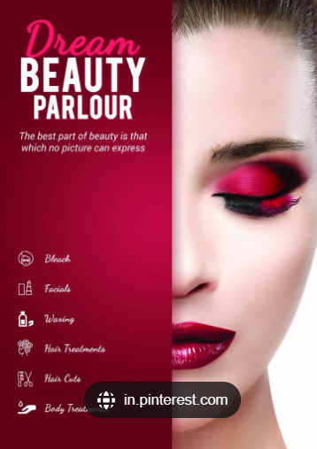

LUX_ING Lux Soap was introduced to America in 1925 by the Lever Brothers. It was a white soap packaged in pastel colors designed to be comparable to the finer French soaps, but more affordable. Once Lux Soap began its national campaign in 1926, it was also advertised for men and children. The Thompson agency then began a campaign in 1928 to get endorsements from Hollywood actresses, by sending 425 actresses cases of Lux Soap. It received 414 endorsements in return, leading them to claim that 9 out of 10 stars in Hollywood use Lux Soap. In 1933, advertisements claimed that Lux Soap was used by 686 out of 694 more well known actresses. Lux Soap's Hollywood campaign along with its many other advertising efforts, would assist Lux Soap in becoming a worldwide leader in soap sales. As the focus of advertising shifted from the use of Hollywood starlets to a focus on everyday women, Lux Soap declined in sales and was removed from the shelves in the 1990s. |
||
LUXURY The word luxury conjures up lots of images—a gleaming Rolls Royce parked in front of an opulent mansion; champagne frothing over an expensive crystal glass; and fine leather handbags stitched by hand. Luxury can also be applied to places—Neiman Marcus, Tiffany’s and the Ritz Carlton all have a reputation as the very finest. “A luxury consumer lives in a world full of options. Sometimes, the details, no matter how small, will set your salon apart from a potential alternative,” says Todd Hildum, executive vice president of sales for Luxury Brand Partners. |
 | |
WHO WE ARE Cosmetics Europe is the European trade association for the cosmetics and personal care industry. Our members include cosmetics and personal care manufacturers, and also associations representing our industry at national level, right across Europe. For more than 60 years, Cosmetics Europe has been the authoritative voice of the cosmetics and personal care industry in Europe. Our industry is closely regulated at European level, and for decades we have worked closely with policy makers to ensure that European regulation is as appropriate and effective as possible. As a consequence, our understanding of regulatory processes and how they impact our industry is unrivalled. |
||